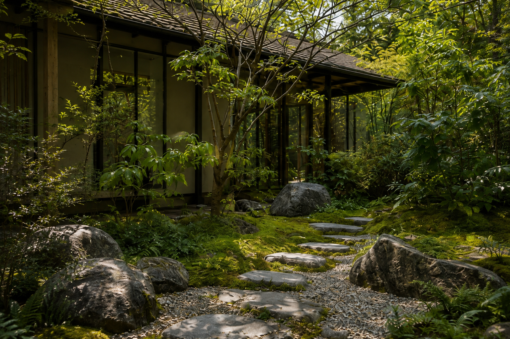

01
Philosophie
Lebendige Systeme statt dekorativer Gärten.
MICROHABITAT gestaltet keine Kulissen. Wir entwickeln Mikro-Ökosysteme, in denen Boden, Wasser, Pflanze, Klima und Zeit zusammenwirken.
Ein Garten wird nicht als fertiges Bild verstanden, sondern als lebendiger Prozess. Gestaltung schafft die räumliche Ordnung und die Bedingungen, unter denen sich dieser Prozess entfalten kann.
Die Auswahl der Pflanzen folgt dem jeweiligen Mikroklima. Materialien altern bewusst. Wasser wird möglichst am Ort gehalten. Pflege unterstützt die Entwicklung, anstatt sie dauerhaft zu kontrollieren.
Gestaltung endet nicht mit der Fertigstellung. Dort beginnt die Entwicklung des Lebensraums.

02
Ökologische Bausteine
Jeder Garten ist ein Lebensraum.
Auch kleine Flächen können Feuchtigkeit speichern, Nahrung bereitstellen, Temperatur ausgleichen und biologische Vielfalt fördern.
- Moos
- Speichert Feuchtigkeit, kühlt bodennahe Bereiche und besiedelt schattige Übergänge. 01
- Klee
- Bindet Stickstoff, schützt offene Erde und unterstützt ein aktives Bodenleben. 02
- Thymian
- Verträgt trockene Standorte und bietet Bestäubern aromatische Blüten. 03
- Sedum
- Speichert Wasser in seinen Blättern und schafft robuste Vegetationsdecken. 04
- Steine
- Sammeln Wärme und Wasser, bilden Rückzugsräume und tragen mit ihrer Patina zur Atmosphäre bei. 05
- Wiesen
- Verbinden Artenvielfalt, Blühphasen und saisonale Bewegung auf einer Fläche. 06
03
Unsichtbare Infrastruktur
Boden als lebendiger Motor.
Gesunder Boden ist ein Netzwerk aus mineralischen Bestandteilen, organischer Substanz, Mikroorganismen, Wurzeln und Pilzen.
Humus speichert Wasser und Nährstoffe. Pilznetzwerke verbinden Pflanzen und unterstützen ihren Austausch. Eine dauerhafte Pflanzendecke schützt vor Austrocknung und Erosion.
Regulation aus dem Boden
- 01Organische Substanz
- 02Mikroorganismen
- 03Myzel & Wurzeln
- 04Wasser & Nährstoffe
- 05Resiliente Pflanzen
Rückführung durch Laub, Wurzeln und natürliche Zersetzung ↺
04
Ästhetik
Schönheit durch Funktion.
Die visuelle Sprache entsteht nicht trotz ökologischer Prozesse, sondern durch sie.
Wenn ökologische Funktionen räumlich präzise organisiert werden, entsteht eine ruhige Ästhetik: wandelbar, taktil und dauerhaft mit ihrem Ort verbunden.
05
Regeneration
Der regenerative Kreislauf.
Ein regenerativer Garten verbraucht nicht nur weniger Ressourcen. Er gibt seinem Ort etwas zurück.
- 01
Boden aufbauen
Organische Substanz wird zurückgeführt, Humus entsteht und Wasser bleibt länger verfügbar.
- 02
Vielfalt ermöglichen
Unterschiedliche Pflanzenschichten schaffen Nahrung, Schutz und kleine klimatische Nischen.
- 03
Bestäuber begleiten
Aufeinander abgestimmte Blühphasen bieten Insekten über lange Zeiträume Nahrung.
- 04
Natur erfahren
Menschen erleben Wetter, Jahreszeiten und Veränderung wieder als Teil ihres Alltags.
06
Signatur-Mikrohabitate
Fünf räumliche Typologien.
Forest Micro-Oasis
Schattig, kühl und vielschichtig — mit Moos, Farnen, Gehölzen und Naturstein.
Schatten · FeuchteEco-Minimalist Carpet
Eine ruhige, bodennahe Pflanzendecke als lebendige Alternative zur Rasenfläche.
Fläche · ReduktionHybrid Nature Oasis
Architektur und Vegetation verbinden Innenraum, Garten und Alltag.
Übergang · WohnenPocket Meadow
Eine kompakte, artenreiche Wiese für Blüten, Bewegung und Bestäuber.
Blüte · VielfaltMicroZen Garden
Stein, Kies, Moos und wenige präzise Pflanzen bilden einen stillen Rückzugsort.
Stille · Material